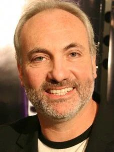
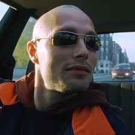
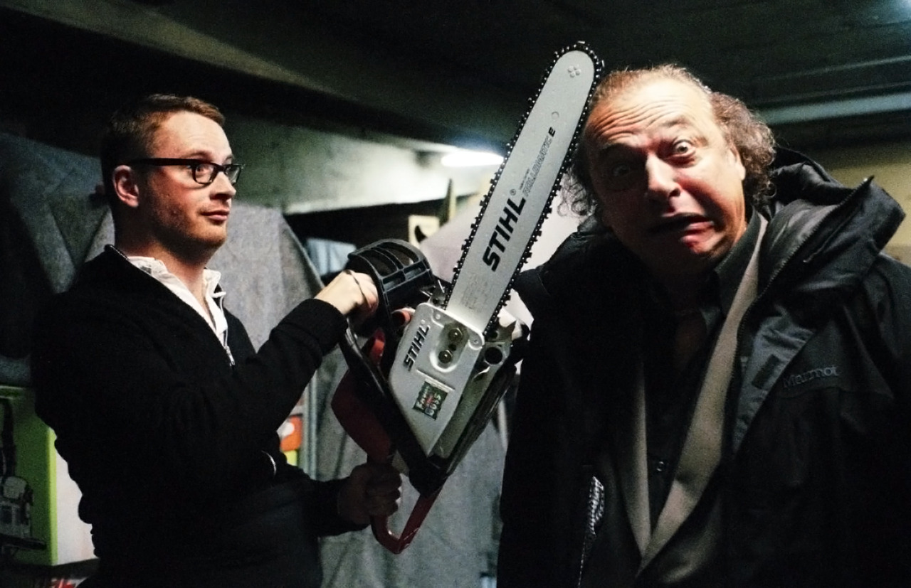
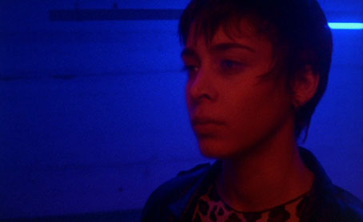
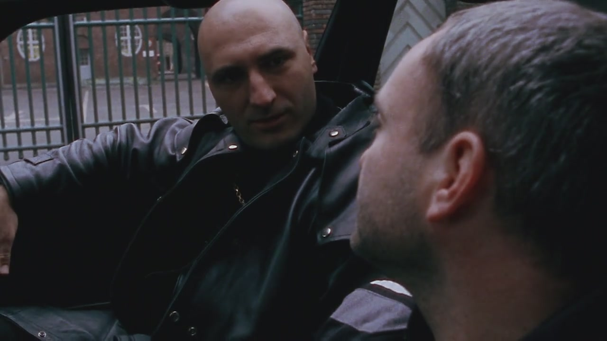

O Pusher acompanha Frank, um pequeno traficante de drogas em Copenhague, que vive de pequenos negócios e tenta manter uma vida relativamente tranquila no submundo do crime. Ele trabalha com seu amigo Tonny, mas as coisas começam a sair do controle quando uma negociação maior do que o usual dá errado. Para tentar lucrar mais, Frank pega drogas emprestadas de Milo, um perigoso chefão do crime, com a promessa de pagamento rápido. No entanto, durante a transação com o comprador, a polícia aparece, e Frank é forçado a se livrar das drogas jogando-as em um lago. Agora, sem o dinheiro nem o produto, ele entra em uma espiral de desespero tentando quitar a dívida com Milo, enquanto enfrenta traições, pressões crescentes e a ruína de sua vida pessoal. Ao longo do filme, vemos Frank tentando enganar, ameaçar ou roubar para sair do buraco, mas a situação apenas piora, revelando um retrato cru e realista da decadência de alguém afundando no mundo do crime.
Kim Bodnia como Frank Protagonista do filme. É um pequeno traficante que se vê em apuros após perder drogas que pegou emprestadas de um chefão local. Kim Bodnia entrega uma atuação intensa, transmitindo a decadência e desespero crescentes do personagem.
Mads Mikkelsen como Tonny Amigo e parceiro de Frank nos negócios ilegais. Tonny é impulsivo, imaturo e se mostra pouco confiável. Este papel foi o primeiro grande destaque da carreira de Mads Mikkelsen, que mais tarde se tornaria uma estrela internacional (Hannibal, 007 – Casino Royale, Druk).
Zlatko Burić como Milo O chefão do tráfico de drogas de quem Frank pega drogas emprestadas. Frio, calculista e perigoso, Milo é uma figura imponente no submundo do crime. Zlatko Burić reprisa o papel nos outros filmes da trilogia e até no remake britânico de 2012.
Laura Drasbæk como Vic Interesse romântico de Frank, uma mulher ligada à prostituição e ao mundo das drogas. Tenta oferecer algum consolo a Frank, mas também está perdida em sua própria vida.
Slavko Labović como Radovan Capanga e cozinheiro de Milo. Apesar da aparência assustadora, sonha em deixar o crime para abrir um restaurante.
